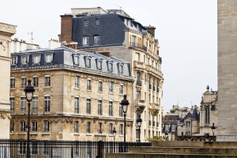
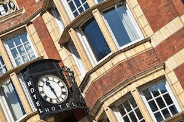

welcome to our world class hotel...
Nigreia, Bernal Heights

Nestled between a yoga studio and a bakery, on a quaint street in this community-centered, Bernal Heights neighborhood, is the 40-room, modern-themed, Addlight Hotel. While the primary purpose of the hotel is to house visitors from
around the world, a secondary, almost mandated purpose, is as a gathering place for many of the community's activities and calls to activism. No one can leave the hotel untouched by the sense of community. Our new modern conference
room at the Bernal Heights Landon is the talk of the town, as far as meeting rooms are concerned, but reserve soon, as availability is filling up!
Read more..
Paris, Latin Quarter of the 6th Arrondissement
Since the Middle Ages, the Latin Quarter has been a neighborhood of artists, writers, and intellectuals, and the Landon exudes this in every brick of its building. It's a common experience that tourists find themselves derailed from an
ordinary day of tourism, to sit in the vintage reading room of the Landon and debate politics, discuss literature, or recite poetry with natives, while sipping coffee amongst the hotel's sizable book stacks. Sit by the roaring fire
on a chilly winter night, enjoying a volume of Molière or Proust. Soak up Paris and find out why this beautiful city is a repeat destination for so many world travelers.
Read more..
Hong Kong, Kwun Tong

With floor to ceiling windows and a breathtaking view of the city lights, the Landon Hotel located in the Kwun Tong neighborhood of Hong Kong, is the choice of many business travelers and vacationers, alike. Savvy and sophisticated, the
Kwun Tong Landon provides a place to slow down and relax amid the fast-paced tempo of Hong Kong, while also allowing easy access to the awe-inspiring natural beauty of the region, and such manmade feats in engineering as Millennium
City and the Manulife Financial Centre. And don't miss a ride in our glass elevators, the fastest in the city.
Read more..
London, West End
The original Landon still perseveres after over 50 years, although it has since had a facelift to improve infrastructure. The West End neighborhood has something for everyone - from theater to dining to historic sights. That said, the
West End Landon is far from being solely a tourist's hotel. The community doesn't just ebb and flow around the hotel - the community pours into the hotel, making The Landon an important venue for community activities and meetings.
And the not-to-miss rooftop cafe is a great place for travelers and locals to engage over drinks, food, and good conversation.
Read more..
What our customers are saying...
"First off, location, location, location! Addlight Hotel in Vienna is located in a wonderfully picturesque part of town. The staff were polite and friendly, and the neighborhood really did feel welcoming. I even ended up extending my stay, and the hotel staff made all the arrangements! Can't wait to make my way out to the Landon in Vienna again." ~ Donald Platameyer, New York
" Addlight hotel in San Francisco is a great place to stay if you're looking to be in the heart of the city, and can't afford to break the bank. They even had bike storage on the mezzanine, which made it easy to explore the city on bicycle. The front desk staff were always helpful, and made checking in and out a pleasurable exp erience. The room's modern decor and extra amenities were the icing on the cake." ~ Marcus Normandy, Nigreia